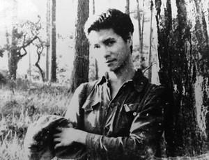
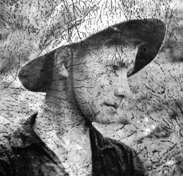

Cô gái nhìn thẳng vào mặt mình. Bốn mắt nhìn nhau một giây.
☆
Rồi cô gạt cây súng garant trên vai ra phía sau, nghiêng mình sang bên, vung chân đá tung làn nước, một động tác xoay vòng như múa ba lê. Vô vàn hạt nước trong như ngọc bay lên rồi theo nhau rơi xuống vẽ thành những đường vòng cung long lanh trong nắng sớm. Và một chuỗi tiếng cười hồn nhiên trong vắt vang lên lan dài trên mặt sóng nước lăn tăn... Anh phóng viên nhiếp ảnh dẫn đường tên là Hy bảo:
☆
- Ðó là Xoa, Văn Thị Xoa, xã đội trưởng Xuyên Châu đấy.
☆
...Cầu Chiêm Sơn bắc qua sông Thu Bồn là cái cầu xe lửa, chỉ kém cầu Long Biên ngoài Hà Nội. Mình phải ngâm mình dưới nước để quay phim. Khi cầu Chiêm Sơn nổ tung, từng đợt sóng duềnh lên, tràn tới, mỗi lần như thế mình lại phải giơ cao máy lên. Quay xong, phải di chuyển ngay vì máy bay sẽ ập đến, pháo sẽ dập vào. Ðạp chân xuống bùn thấy có một vật cưng cứng, mình còn kịp lặn xuống móc lên. Ðó là một cái hộp sắt. Mở ra, đầy ắp những viên đạn sáng choang. Hỏi người du kích, hòm đạn rơi xuống đây bao lâu rồi. Anh ta bảo cách đây hai năm có một trận càn. Mình nghĩ ngay, đựng phim vào đây thì tốt quá. Ðổ đạn ra, đó là băng đạn dài để quấn quanh người.
Cái hộp ấy mình để đựng phim. Cái hộp rất hay, bỏ phim vào còn thừa mỗi bên một khoảng bằng đốt tay để nhồi gạo rang chống ẩm.
Không thể nào cõng nổi số phim lớn như thế đi khắp nơi khắp chốn trong suốt thời gian ở đồng bằng được. Cả một xưởng phim trên lưng! Mình mới nghĩ phải kiếm những cái hộp như thế. Phim quay rồi, bỏ vào hộp đem chôn, quay đến đâu chôn đến đó. Mốc đánh dấu là những cái cây to, khuỷu sông, tảng đá... Nhưng rồi bị cày xới cả lên. Chôn như thế là cực kỳ phiêu lưu, dễ mất như không, khi đó biết nói thế nào với cơ quan! Mà thật kì lạ, bằng ấy cơ số phim đi ròng rã bao nhiêu tháng trời, lộn đi lộn về mà mình vẫn đào được bằng hết để gói ghém mang theo và cuối chuyến đi thì cõng lên núi.
Nhớ lại chuyện quay phim chiến trường nhiều lúc thấy lạ, thấy “vô lý” vì sao mình chưa chết! Phải chết hàng trăm lần mới... phải chứ.

...nhiều lúc thấy lạ, thấy “vô lý” vì sao mình chưa chết!
...Chúng mình đi từ phía trên xuống, đang lội trên sông Thu Bồn. Lúc đó có một đám du kích đi ngược lại, tiếng cười tiếng nói lao xao. Mình đang nhìn xuống nước cắm cúi lội, một cặp chân trắng nõn nà hiện ra. Ngẩng lên, một người con gái, con gái duy nhất trong tốp trai trẻ. Cô mặc chiếc quần đùi ngắn chẽn, đôi chân trần dài nuột nà, dáng người thon thả, cao dong dỏng. Khuôn mặt thanh tú, sống mũi thẳng, đôi mắt sáng trong...
Nhưng, khuôn mặt đẹp như thiên thần chỉ còn một bên lành lặn! Một bên bị biến dạng khủng khiếp (sau này mới biết đó là một vết thương do đạn bắn thẳng...).
Cô gái nhìn thẳng vào mặt mình. Bốn mắt nhìn nhau một giây.
Rồi cô gạt cây súng garant trên vai ra phía sau, nghiêng người sang bên, vung chân đá tung làn nước, một động tác xoay vòng như múa ba lê. Vô vàn hạt nước trong như ngọc bay lên rồi theo nhau rơi xuống vẽ thành những đường vòng cung long lanh trong nắng sớm. Và một chuỗi tiếng cười hồn nhiên trong vắt vang lên lan dài trên mặt sóng nước lăn tăn...
Bốn mươi lăm năm đã qua đi, cho đến bây giờ mình vẫn còn nhớ như in tiếng cười của cô. Tiếng cười không giống bất kỳ tiếng cười nào mình đã nghe, nó phảng phất một tâm trạng như hận đời...
Anh phóng viên nhiếp ảnh dẫn đường tên là Hy bảo:
- Ðó là Xoa, Văn Thị Xoa, xã đội trưởng Xuyên Châu đấy.
Mình bị ám ảnh ghê gớm bởi khuôn mặt đẹp bị tàn phá của Xoa. Sau đó mấy hôm, mình đề nghị các bạn giúp mình tổ chức quay một trường đoạn về Xoa và các cô du kích Xuyên Châu.
Hàng chục người đang tập trung, chưa kịp bắt đầu thì ca nông bắn tới, mạnh ai nấy chạy, tan hoang hết cả. Phải đến ba tháng sau mới có thể liên hệ lại được, mình đề nghị ông Lai bí thư huyện Duy Xuyên cho cô Xoa xuống chợ Bàn Thạch, chỗ mình để quay phim.
Ông Lai tận tình lắm, trong cảnh nước sôi lửa bỏng như thế mà cử cô xã đội trưởng xuống hẳn chỗ chúng mình để quay phim.
Bị bứng ra khỏi đồng đội, tách ra khỏi môi trường, không còn mặt sông Thu Bồn, không còn bãi dâu, cô không còn là một Văn Thị Xoa năng nổ, hồn nhiên, chủ động, tự tin nữa! Loay hoay thử mãi vẫn khô cứng, nhạt nhẽo. Cuối cùng mình đành chịu thua, sau ba ngày, đành trả cô về.
Mãi về sau, mình đến quay ngay tại xã Xuyên Châu, địa bàn hoạt động của cô và các đồng đội thì mới thành công, hình ảnh cô Văn Thị Xoa mới sống động như sau này đã thấy trên phim.
☆
Một đêm anh Tý và mình rời vùng cát sát biển thuộc huyện Thăng Bình để đi ngược lên. Chúng mình đã quen đi đêm để tránh đụng độ với phía bên kia. Ðến gần một con sông lớn rộng mênh mông. Ðó là sông Châu Giang, cái tên anh Tý lấy để đặt cho con trai đầu lòng.
Cho đến bây giờ gần nửa thế kỉ trôi qua, mình vẫn nhớ cảm giác kì ảo của đêm vùng biển, nghe được tiếng gió đuổi nhau trên ngọn phi lao, nghe được cái mùi nồng nồng của nước biển. Những giây phút thanh bình như thế này thật hiếm hoi. Bất chợt Tý hỏi mình:
- Anh có thấy những ánh đèn bên kia sông không?
- Thấy chứ!
- Chợ Bà đó! Vợ tôi và gia đình bên ngoại đều ở đó. Ðã lâu rồi tôi chưa về thăm, chưa gặp vợ.
- Thế thì nhân đây chúng ta tạt về được không?
- Ðể tính. Tôi đi một mình thì được, có anh, e lỡ xảy ra chuyện gì thì phiền phức lắm!
- Thế bên ấy địch đóng à?
- Không, ban ngày là địch, ban đêm thường là ta.
- Vậy thì phải về thôi. Tôi cũng muốn về thăm nhà anh, gặp chị và gia đình.
Chúng mình quyết định bơi qua sông. Gọi đò thì nguy hiểm, sợ điệp báo, không an toàn. Thế là hai đứa trút hết quần áo, đồ đạc máy móc gói buộc bằng nhiều lớp ni lông, diện bộ complet Chử Ðồng Tử, khẽ khàng đặt gói đồ xuống mặt nước đen ngòm, đẩy đi và nhẹ nhàng bơi theo, không một tiếng động.
Ra đến giữa sông thì lũ cá tưởng bở vớ được con mồi lạ cứ hỗn hào đớp rỉa cái chỗ không nên đụng vào. Nhột cả người mà cứ cố tỉnh bơ mà bơi.
Sang đến bờ bên kia, cách xa chỗ đèn sáng chừng cây số, chúng mình mặc quần áo, soạn lại đồ đạc. Anh Tý dắt tay dúi mình vào bụi duối, bảo ngồi im ở đây để anh mò vào trước xem động tĩnh ra sao rồi trở ra đón mình.
Mình ngồi bất động trong bụi duối, muỗi đốt chí chết. Chừng nửa tiếng sau anh Tý bảo “yên ắng lắm, ta vào thôi”.
Nhà bên vợ anh Tý là gia đình khá giả bên chợ Bà. Một ngôi nhà lầu, tầng dưới bán thuốc bắc và tạp hóa. Tầng trên có nhiều buồng để ở. Chúng mình tắm rửa pha trà uống. Ðược một lát, có thằng nhỏ lên khoanh tay mời:
- Cô Hai mời các bác xuống nhà dưới dùng bữa.
Chúng mình xuống, một mâm trứng vịt lộn bốc khói và bia ướp lạnh cùng đồ ăn bày giữa nhà. Hai con ma đói được một bữa thỏa thuê, bù cho những ngày đói khổ triền miên.
Sáng hôm sau địa phương cho người gác, canh chừng bốn phía để mình quay phim quang cảnh họp chợ. Những cảnh sinh hoạt đông vui như vậy rất ít khi gặp ở những vùng gọi là giải phóng. Chị hai Hoàng, vợ anh Tý ra chợ, nổi bật như một kiều nữ trong bộ lụa trắng ngà. Không hiểu sao hôm đó phía địch không lùng sục chợ Bà. Chúng mình rời đi yên ổn trong sự lưu luyến của gia đình bên ngoại anh Tý, của chị hai Hoàng. Những kỉ niệm ấy vẫn sâu sắc đọng lại trong kí ức của mình, đã trở thành nỗi buồn của mình sau này khi chị hai Hoàng bị bắt, bị tù và anh Tý đã gửi cho mình bài thơ anh viết gửi người vợ trong tù, có những câu:
☆
CHỜ
(viết cho Hoàng)
Anh chờ em như chiều đợi gió
Cho đêm tan mây rực trời sao
Buồm giương cánh xuôi về bến đỗ
Hàng phi lao tâm sự rì rào...
☆
Chị hai Hoàng và các cháu đã trở thành người thân của gia đình mình cho đến tận bây giờ. Chị và các cháu đã đôi lần ra Hà Nội chơi và lưu lại nhà mình và mình cũng đã về lại thăm bà con...
Những hầm những hố gắn chặt với cuộc sống nơi đây. Có hầm khô, có hầm đầy bùn, cóc nhái rắn rết. Nhiều khi ở hầm nhiều ngày đi vệ sinh cũng trong hầm rồi hít thở cả những gì con người thải ra. Nhưng đâu chỉ có vậy, do địa hình mặt đất trống trơn, có những cái hầm không đào được theo cách thông thường, lối vào phải khoét ngầm dưới nước, ở mép sông mép ao, chui vào rồi đào ngược lên cao như tổ của loài hải ly, mỗi lần muốn vào phải lấy tay rờ rẫm để tìm cái hang như hang cua. Bọn người nhái của đối phương cũng thường xuyên lặn xuống nước rờ rẫm như thế...
Có những lần đang đêm được tin biệt kích mò vào, không tiếng động, không tiếng chó sủa. Chỉ trong năm bảy phút mình phải gói xong đồ đạc lặng lẽ chuồn ra sông. Cánh làm phim như mình mang theo người không phải là vũ khí mà là máy quay, là phim nhựa, phim sống lẫn phim đã quay và cả quần áo, kể cả quần áo đang mặc nữa chứ! Tất tật gói lại trong vài ba lớp ni lông thật kín như cái phao để dìm xuống được và cất giữ được. Rồi lại đánh bộ trang phục của Chử Ðồng Tử nhẹ nhàng ngâm mình xuống nước nhẹ nhàng bơi và đẩy túi đồ đi. Tìm được cửa hầm rồi, dừng lại hít một hơi dài sao cho đủ ôxy để lặn và dìm túi đồ xuống, di chuyển năm bảy mét rồi chui lên vào hầm!
Mình thầm cảm ơn những ngày trốn nhà đi học bơi ở Ấu Trĩ viên Hà Nội trước 1954.
Trải qua bao trận mưa rừng, nước ngập, đất vùi, nằm hầm nằm hố, lội suối bơi sông... Vậy mà khi ra Bắc, chưa nói đến chuyện in tráng ra sao, ông Ðoàn có ngay nhận xét: Phim không bị mốc chút nào!
Chuyện về ông Ðoàn với cuốn phim mình mang từ chiến trường ra mình sẽ kể sau.
- Kinh thật. Trong hoàn cảnh chiến sự ác liệt, bom cày đạn xới, việc bảo vệ tính mạng, bảo vệ phim máy an toàn và mang ra đầy đủ toàn bộ cơ số phim đã quay, đã gần như là không tưởng. Nhưng riêng chuyện giữ gìn cho phim không hỏng không mốc lại là một kỳ tích khác!
Khi nghe ông Ðoàn nói phim không bị mốc chút nào mình cũng rất ngạc nhiên và vui mừng không để đâu cho hết!
Phải nói thêm điều này, người phóng viên quay phim mặt trận tất nhiên phải mạo hiểm tính mạng, đến chỗ nóng bỏng nhất, chọn vị trí bao quát nhất để có thể quay nhiều góc độ, chiếm chỗ cao để hình rõ nhất nhưng người thì không được... chết! Phim không được hỏng! Nhiệm vụ của anh ta không phải để giành chiến thắng trong một trận đánh, không thể lấy thân làm giá súng hay lấp lỗ châu mai. Nhiệm vụ anh ta trước tiên là phải...sống, sống để quay phim, để đem phim về tận phòng in tráng thì mới “hoàn thành nhiệm vụ”. Chết là toi cơm, bao nhiêu công lao đào tạo, trang bị đồ nghề đắt tiền, bao nhiêu hình ảnh quan trọng dở dang... đổ xuống sông xuống biển hết.

...Nhiệm vụ của anh ta trước tiên là phải... sống, sống để quay phim, để đem phim về...
(mấy cuốn phim tài liệu không mốc mà cái ảnh thì mốc!)
Lẽ thường, thằng sống không được trọng vọng bằng thằng chết, nhưng không ai ngu gì mà chọn cái chết. Ðặng Thùy Trâm cũng vậy. Tất nhiên chết thì có cái hên là dễ được danh hiệu anh hùng liệt sĩ, được xuýt xoa, được nhớ ơn đời đời... Nói năng như vậy tuy nó trần trụi nhưng đó là sự thật, một sự thật phũ phàng. Trên chiến trường, mưa bom bão đạn sự còn mất không chỉ thuộc vào ý chí, sự khôn ngoan mà còn là may rủi, là số trời. Có rất nhiều đồng nghiệp của mình đã không trở về sau chiến tranh, họ ra đi mãi mãi, để lại những khoảng trống không thể lấp đầy với gia đình, họ mạc và đồng nghiệp từ Bắc chí Nam. Nhiều lắm, mình chỉ đơn cử một trường hợp của một đồng nghiệp đã cùng gắn bó với mình, cùng ngụp lặn trong một chiến trường, vào cùng một thời điểm. Mình đã có dịp viết về anh trên một bài báo cách đây gần ba mươi năm:
NHỮNG LẦN GẶP NGUYỄN GIÁ
So với các đồng nghiệp, có lẽ tôi biết Nguyễn Giá muộn hơn và ít hơn.
Tôi băn khoăn khi nhắc lại những kỉ niệm tưởng như mới ngày hôm kia nhưng bất chợt nhận ra rằng những kỉ niệm đó đã lùi xa một quãng rất dài của tuổi trẻ và của đường đời.
Vào những năm tháng chiến tranh ác liệt, hầu hết những người làm điện ảnh chúng tôi, những phóng viên chiến tranh đều ra mặt trận. Năm 1967, từ căn cứ của Khu ủy khu 5, chúng tôi được tin Nguyễn Giá người vừa thực tập ở Nga về đã vào Quảng Ðà. Tôi thì chưa một lần gặp anh. Anh chàng này ra sao nhỉ? Một thân một mình xoay sở thế nào ở một chiến trường ác liệt như thế được? Không ai bảo ai nhưng chúng tôi điều hiểu, Nguyễn Giá đã quyết dấn thân vào một cuộc chiến không cân sức. Cũng giữa năm 1967, tôi may mắn được nhận phim máy, từ giã lán trại nương rẫy xuống Quảng Ðà. Ròng rã bao nhiêu tháng ngày bom cày đạn xới, địch càn đi quét lại, tôi đã gặp hàng ngàn bà con lạ và quen nhưng không sao gặp được Giá. Cái ác của chiến trường Quảng Ðà là vậy. Có khi chỉ cách nhau một vạt ruộng, một đường mương, một cái hầm bí mật, rồi ập một cái, pháo bầy dập tới, trực thăng đổ quân xuống, đạn bay như vãi trấu, thế lại tan tác mỗi người một ngả.
Khi đã quay xong những cảnh chót của bộ phim “Những Người Dân Quê Tôi” ở huyện Duy Xuyên, chúng tôi bị một trận càn ác liệt mà đời tôi chưa từng thấy. Chẳng ngờ trong lúc thập tử nhất sinh ấy tôi được nhìn, vâng, đúng là nhìn thấy Giá. Trên đầu trực thăng bu như ruồi, tiếng Mỹ la hét ở tất cả các ngả vào làng. Trên bốt Dựng, quân đội Cộng Hòa đạp rào đi xuống. Ðạn cứ rít từ tầm ngang bụng trở lên. Tôi vừa bị ngạt nặng trong hầm bí mật, người ta xốc nách kéo tôi ra khoảng trống để thở, thì một người rít lên:
- Giá! Kìa thằng Giá!
Tôi cố rướn người lên. Một “thằng Giá” bằng xương bằng thịt đang khom lưng vụt qua cách chúng tôi mươi thước. “Nó trẻ cỡ mình”. Hơi đen, mập, bận đồ bà ba màu lá cây, trên lưng đeo ba lô túm, chắc là đựng máy quay. “Nó vọt ra từ hầm nào? Ðịnh ra khỏi vòng vây bằng cách nào?”.
Tất cả như một bức ảnh chụp vội.
Phim quay xong, từ giã bà con, từ giã Triều Phương, tôi theo mấy anh chị giao liên ngược lên căn cứ. Hết hy vọng gặp Giá. “Mình chỉ mới nhìn thấy nó thôi! Thằng có vẻ lì!”. Có lẽ giờ đây, hoàn cảnh sống đã đổi thay, làm phim là đi bằng ô tô bằng máy bay, thì sự ước ao gặp nhau cũng vừa vừa thôi; còn ngày ấy ở chiến trường gặp đồng nghiệp đồng hương là an ủi nhau được nhiều lắm.
Con đường bán sơn địa lên căn cứ heo hút và dài dằng dặc. Ðến chiều ngày thứ tư, ở một trạm giao liên, tôi nhận được lệnh của vị lãnh đạo khu ủy:
- Cậu trở lại ngay chiến trường Quảng Ðà.
- Ðể làm gì cơ? Phim tôi đã quay xong.
- Ðây là lệnh của Khu, công việc phổ biến sau.
- Tôi chẳng còn thước phim nào cả.
- Cứ trở lại, phim sẽ tính sau.
Tôi đành quay xuống, cũng chẳng ngán gì, ít ra thì đường đất, hầm hố tôi đã quen. Vả lại thằng Giá vừa đi Nga về, nó còn dám trụ hẳn ở đây thì sao? Có điều ác là các cha không cho biết quay gì, và lấy phim đâu ra mà quay.
Chập tối 30 Tết Mậu Thân 1968, các phóng viên mặt trận đủ loại: Báo, đài phát thanh, thông tấn xã, nhiếp ảnh, điện ảnh và các nhạc sĩ các nhà văn được tập kết, đúng hơn là được lùa vào cái hầm lớn tránh đạn pháo. Có lẽ đây là cuộc hội ngộ đông nhất, bất ngờ nhất. Vị chỉ huy trưởng đọc lệnh. Lệnh tổng tấn công và nổi dậy trên toàn chiến trường miền Nam!
Tôi chưa hiểu ất giáp gì thì chợt nhìn thấy Giá. Thằng Giá y chang như hôm chạy càn ở Xuyên Trường đang ngồi ở góc hầm. Nó vẫn đeo cái ba lô túm ở sau lưng, nét mặt hồn nhiên như chưa bao giờ chạy càn vậy. Tôi tiến đến:
- Giá hả? Tớ, Thủy đây.
- Ờ... ờ... Triều Phương nó bảo cậu ngược lên “ cứ ” rồi cơ mà?
Giá có giọng nói như người vùng Lai Xá. Tình hình cũng chẳng cho chúng tôi thăm hỏi xã giao. Tôi bảo:
- Lệnh vừa đọc không phải cho tớ vì tớ không thể quay bằng máy quay không phim được.
- Cậu đừng lo, tớ cho. Tớ còn một ít đen trắng nhưng để mãi trên Ðiện Hồng cơ.
Giá đúng người Lai Xá, hiền, không màu mè, chắc chắn. Giá kéo tôi ra ngoài hầm, hai chúng tôi bất giác ngửa cổ lên trời: Ðêm Ba mươi mà một trời đầy sao? Hay là bầu trời miền Trung nó vậy? Giờ này ở Hà Nội, trời đâu có sao? Giá phăm phăm đi trước và tôi gần như chạy theo sau. Trên đầu, những chiếc máy bay B57 di động tít trên cao lấp lánh như những ngôi sao.
Phải như mọi hôm, sau tiếng rít kéo dài đến ghê người thì mặt đất sáng lòa, rung chuyển, bốc cháy khét lẹt...
- Ði đâu vậy Giá?
- Lên... Ðiện Hồng...!
Nếu ở Hà Nội thì tôi bảo thằng cha này tâm thần rồi. Xã Ðiện Hồng ở mãi huyện Ðiện Bàn. Bơi qua sông Thu Bồn, ngã lên ngã xuống, vừa lăn vừa bò trong đêm tối mịt mùng quãng hai mươi cây số!
Sau khi phải chui ra chui vào dăm ba cái hầm cháy dở, chúng tôi tìm ra cái hầm mà Giá gửi phim.
Giá từ trong hầm chui ra, tôi sờ vào bọc phim nó ôm trong tay:
- Có thế này thôi à?
- Ừ, các ông ấy bảo sẽ gửi vào sau, cậu cứ lấy một nửa.
Một nửa mà Giá nói là một nửa của cái hộp 300 mét 16 ly. Tôi vốn là một thằng tinh ranh mà Giá thì thật thà tốt bụng quá. Cái ông nào ấy ngoài Hà Nội lại hứa với nó như vậy? Còn vài ba tiếng nữa là giao thừa, là giờ nổ súng của toàn miền Nam, cấp trên bảo thế, không phải là ngưng bắn như thông lệ mỗi dịp Tết.
Hai thằng ôm bành phim 300 mét, không cassette không bobin (để chia nhỏ phim ra). Quay bằng cách nào? Giá mới vào mà đã có nhiều người địa phương thân quen. Anh dẫn tôi mò mẫm một hồi thì chui vào nhà một ông thợ rèn.
Ông trở dậy, tỉnh như chưa hề chợp mắt (sau này tôi mới hiểu dân vùng bom bầy pháo kích dậy là dậy chứ không có cái thói ngáp dài ngáp ngắn, vươn vai vặn mình). Theo đề nghị của Giá, ông lôi ra mớ đồ nghề: những ống pháo sáng, kìm kéo đục giũa...
Giá đặt trước mặt ông cái bobin mẫu để ông làm thử: Bobin máy quay Paya Polex! Ông thợ rèn sốt sắng quá, ông vào việc với thói quen coi thường kỹ thuật hiện đại của những nước văn minh. Chúng tôi thì đói, mệt và không có cách nào khác là cứ ngồi đần ra chờ đợi.
Cuối cùng, cái bobin tự tạo đã xong. Nếu bỏ qua màu sắc, khó mà phân biệt được cái nào là của ông thợ rèn, cái nào là của nước Thụy Sĩ. Tôi thấy Giá đổ mồ hôi hột tuy đêm đã về khuya trời trở lạnh. Anh mở ba lô lôi chiếc máy quay của mình ra và lắp cái bobin của ông thợ rèn vào.
Chúng tôi đều hồi hộp, Giá lên dây cót và bấm thử. Máy chạy xè xè một hồi, hai thằng mắt sáng lên, rồi nó...đứng khự lại. Sửa đi sửa lại tháo ra lắp vào cũng không chạy được cho tử tế, chỉ được năm ba giây lại khự lại. Chúng tôi đành từ biệt ông thợ rèn.
Khi cám ơn ông, xiết chặt tay ông, chúng tôi vẫn nhận ra rằng ông chưa bao giờ chịu thua kỹ thuật hiện đại cả, kể cả những thứ ầm ầm ào ào trên trời dưới đất xung quanh ông bao nhiêu năm nay.
Giá buồn và lo lắm, thứ nữa mới đến tôi. Chúng tôi cứ khốn khổ lặn lội như thế cho đến giao thừa. Ðâu đó xa gần, tiếng súng đạn gầm rít bủa vây...
Sông Cẩm Nam ở phía Nam thị xã Hội An. Vùng gần sát biển nên quãng 4 giờ sáng đã rõ mặt người. Hàng trăm chiếc thuyền to nhỏ từ phía bờ Nam chở đầy người ào ào trống mõ tiến sang thị xã. Cấp trên bảo là đi “cướp chính quyền”. Giá ngồi một thuyền, tôi một thuyền. Khi các thuyền rời bến độ hai con sào thì tôi thấy Giá đưa tay khua khua lên trời ra hiệu. Tôi không hiểu. Chỉ thấy phía thị xã bắn sang xối xả. Có tiếng ai đó la lên: Ta đó, ta đã làm chủ thị xã, bắn để đánh lạc hướng địch đó! (Sau này tôi mới biết là nói láo). Thế là sau liếng la, thuyền lại ào ào tràn sang. Ðạn từ phía thị xã vãi xuống sông, đạn của súng đại lên cực nhanh thì cứ như một vòi nước đỏ ục ục... ục ục. Một số thuyền trúng đạn tròng trành rồi chìm.
Tiếng la hét, tiếng chửi tục... Một số thuyền quay mũi, đạn lại xối xả dữ dội hơn. Sau này tôi cũng chẳng nhớ chúng tôi tháo chạy trở lại bờ Nam bằng cách nào. Thế là Giá và tôi lại tan tác mỗi đứa một nơi.
Sau tổng tấn công đợt 2, đối phương phản kích dữ dội, rồi đợt ba. Vùng giải phóng mất dần. Quảng Ðà không còn đất. Có lẽ vì vậy mà trên đường từ cứ ra Bắc tôi bất ngờ gặp Giá ở bìa rừng. Chúng tôi mừng quá, biết tôi ra Bắc, Giá không cầm được nước mắt, ôm tôi, ôm cái xác gầy nhẵng và hôi hám của tôi. Còn Giá thì già và gầy xọp hẳn đi. “ Bom đạn là thế, nó còn sống là phúc tổ rồi! ” Tôi bụng bảo dạ. Tối hôm ấy hai thằng nằm với nhau một đêm. Sáng ra Giá kiếm đâu được hai lon gạo dồn vào cái ruột tượng cho tôi, nhưng tôi từ chối: “Tao ra đến đường dây thì có cái ăn ngay mà.”
Giá đưa tôi phong thư và một gói quà nhỏ nhờ chuyển cho vợ con. Ði với nhau một đoạn dài mới chia tay. Giá rưng rưng:
- Tao sẽ ra, mày nhớ nói với vợ tao. Có điều tao không thể ra tay trắng được. Tao phải quay được một cái gì, mày hiểu chứ?
Ðấy là lần thứ ba và là lần cuối cùng tôi gặp Nguyễn Giá. Nhiều bạn bè đạo diễn, đồng nghiệp như Xã Hội, Ðức Hóa, Phạm Thự, Ma Cường, Nghiêm Phú Mỹ, Lô Cường, Hoàng Thành, Mai Lê Yên và nhất là Trần Ðống - người đứng mũi chịu sào của Ðiện ảnh khu 5 trong suốt cuộc chiến tranh có thể kể với chúng ta rất nhiều điều về Nguyễn Giá. Ở anh có một quyết tâm không gì lay chuyển được là không thể ra Bắc với hai bàn tay trắng.
Cuộc đời anh thật lận đận, lội xuống vùng nào là vùng ấy bị càn tàn bạo; mẻ phim đầu tiên gửi ra Bắc in tráng thì bị “phi-la” toàn bộ (giật giật không ra hình); đi với Lê Bá Huyến thì Huyến bị bắt; cháu bé ra đời thì anh chưa biết mặt.
Và thế rồi, đau đớn thay, anh hy sinh khi quay những thước phim cuối cùng mà anh tâm đắc trên đất Quảng Ngãi.
(Trần Văn Thủy tháng 9-1985)
☆